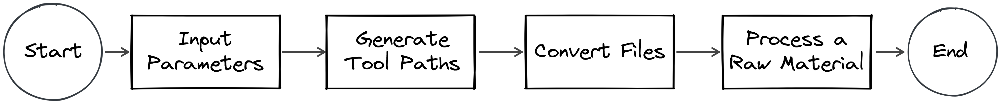

Contour Island Milling
Brief
The project provided an built-in CAD/CAM( computer aided design/computer aided manufacturing) program in milling machine controller. There are several fully featured CAD/CAM software on the market. However, since those softwares could offer so much features, they demand long training time to users and also are very expensive. Sometimes, the customers only want to have some light-weighted solutions in a restricted scenario. In this project, our customers want to manufacture an island feaure on materials. We made a built-in CAD/CAM in the controllers. Users don’t need to use computer to generate machine instructions. They could do the task by using a conversational window on the controller. It can simplify the process of manufacturing.
My Role
Build up an algorithm
Skill
C#
Timeline
2018/08 - 2018/09, 2 months
Workflow

- Clarify Specification: After collecting all information and customer needs, I would define the specification and requirements of the project.
- Design Interface: designing the software interface first helps collaborate with others.
- Develop Algorithms: Analyze and break down the problems. Then, find solutions to each small part.
- Evaluate Outcome: Ensure the program achieves its objectives after implementation.
Step 1: Clarify Specification
I asked customers and co-workers about the project's background and context in order to understand the specification of the project.
User Flow
Analyzing each step of users’ workflow, I got an overview of the project. In the workflow, users would operate the human-machine interface (HMI) on the controller to set the processing parameter. The controller would convert machine instruction files. Finally, the users started the machining.
User Interface - Input Parameters
Users input raw material shape, island shape, and processing parameters.


After understanding the workflow, I could separate the process — “generate tool paths”, which I would be in charge. The next step is to know what is the input and the output.